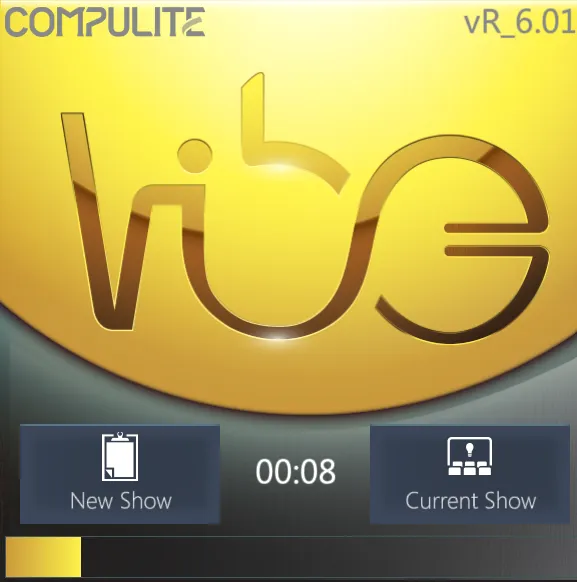

Vibe Manual
Chapter 1 Introduction
👉 Start up the Vibe and get confident with this User Guide and with Compulite Support.
This chapter discusses getting started with Compulite Vibe.
Chapter index:
- 1.1 Start Up
- 1.2 Guide Conventions
- 1.3 Important Terms
- 1.4 Software Capacity
- 1.5 Support
- 1.6 Releases
1.1 Start Up
Power requirements:
- Vibe uses a power supply that supports 90-264V at 47-63 Hz.
- Approximately power consumption is 3.2A at 230V.
- Input uses a Neutrik powerCON connector.
Desk Light:
- Insert the goose neck desk light into the 3 pin XLR on the rear of the console.
- Desk light intensity is controlled in the {System Settings} {Hardware} tab.
Monitor intensity:
- Monitor intensity is controlled in the {System Settings} {Hardware} tab.
Power up the console:
- Insert the supplied powerCON male connector into the female connector located on the rear of the console. Align the guide slots and turn clockwise untill the connector locks.
- Turn on the power supply switch above the powerCON connector.
- Press the Power button located at the upper corner of the monitor panel.
- The operating system will boot and the Vibe console software will automatically launch.

A loading popup with a countdown asks if the user wants to open a New Show or the Current Show. If no selection is made the Current Show is loaded.
After opening the Vibe software for the first time, the Tutorial popup is shown. This option can be disabled through the “Don’t Show Again” key.
Power down the console:
- Tap the {Vibe} menu key beside the command line on the main display - The Vibe Menu will open.
- Tap {Exit} - The {Exit Vibe} popup will appear.
- Tap {Yes} or {No} to save or not the current show file.
- The Vibe application will shutdown.
- Press the Power button - The console will safely power off.
1.2 Guide Conventions
[XXXX] - Physical key
{XXXX} - Soft key
[ ] { } - Example
Press - Action applied to a physical key
Tap - Action applied to a softkey or a virtual key
Toggle - Action that actives and deactivates with alternating taps or presses
Key - Any physical or virtual button
Keypad - Embedded numeric keypad
Keyboard - Console’s pull-out ASCII keyboard or any external keyboard
SK - Object softkeys (Libraries, Groups, Snaps, Macros, etc.)
👉 - Hint or suggestion
RED - Important information or Caution
[Here] - Short form for Press an appropriate destination key or button
1.3 Important Terms
DMX 512 Output/Input Port - One of the 8 physical 5 pin XLR connectors on the back of the console. Although the gender is female, any connector may be configured as an input but must use a turnaround adapter.
DMX 512 Universe - Virtual DMX outputs 0 ⟶ 256 that may be routed to the 8 physical outputs and/or any of the three supported DMX over Ethernet protocols.
- Compulite VC
- ArtNet
- sACN
HTP (Highest-Takes-Precedence) - When the same parameters are on two or more controllers, the highest value will output to the stage. Mainly used for dimmer values.
LTP (Latest-Takes-Precedence) - When the same parameters are on two or more controllers, the last asserted parameter will output it’s values to the stage, no matter what the value is.
Show - The file saved by the software containing all the programmed data.
Layout - The file saved by the software containing all the visualization data.
Window - An element of the layout that contains up to 12 Pages. When using multiple screens, each one can have its own window.
Page - An element of the window that contains the Views. Vibe has three page types called Patch, Prog, Play.
View - A single element that can be added to a Page, such as universe view, live view, timeline view, topo view, qlist tracksheet, and many others.
HardKey - Any physical button on the console or its virtual equivalent on the screen.
SoftKey - Any virtual button on the screen that corresponds to a stored element such as libraries, groups, qlists, scenes, macros, and snaps.
Set = Fixture numbering system
- 0 = Fixtures, (Default, includes all sets)
- 1 = Channels (Conventional fixtures)
- 2 = Spots (Automated heads and mirrors)
- 3 = Matrix (LED pixel-based fixtures)
- 4 = Servers (Video servers)
- 5 ⟶ 1000 = User defined sets
Fixture - An independent object controlled by the console thorough DMX or network protocol, such as a conventional or LED luminaire, a moving head, or a media server.
Parameter - An individual feature of a fixture such as dimmer, pan, tilt, color wheel, gobo wheel.
Bank - A group of features of a fixture such as intensity, position, color, beam, image and shape.
Encoder - A physical or virtual wheel used to control the values of the fixtures’ parameters.
Editor - The part of the system that is used to program the fixtures and store the objects.
Playback - The part of the system that is used to play the fixtures by triggering the stored objects.
Smart Screen - A view on the Vibe software that controls the Editor and every parameter of the selected fixtures. In 2-screen consoles the Smart Screen is always shown on the small screen on the right side.
Controller - Any physical or virtual control element that executes or plays back system objects such as cues, scenes, macros, and snapshots.
Black Out - A physical or virtual button that inhibits the dimmer values of every fixture bringing them at 0%, often referred to as a B.O..
Grand Master - A physical or virtual control element that inhibits the dimmer values of every fixture, proportionate to their assigned value.
Submaster - A special type of Scene where stored fixtures inhibit their dimmer values, proportionate to their assigned value.
Master Controller - Main playback section of the console with large [GO], [BACK], [HOLD] keys. There can be only one Master Controller, but it can be assigned to any controller.
Playback Master - A controller that is mastering other controllers.
Slider - A slider potentiometer Controller, often referred to as a Fader.
Qkey - A single button or a knob potentiometer Controller.
Auxkey - A single button potentiometer Controller.
Global - A slider potentiometer Controller.
CrossFader - A pair of slider potentiometer Controllers used to manually control the fade in and fade out of consecutive Cues.
TrackBall - Ay physical control element with a spheric shape used to focus moving fixtures through the Position parameters of Pan and Tilt.
Qlist - A Folder containing cues. Each Qlist has its own unique numbering system from 0.001 to 999.999.
Chaser - A Qlist that is set to run automatically into a loop.
Cue - A record contained within a Qlist. Cues contain stored parameter values and properties such as text label and time values.
Cue Zero - The starting point at the top of a Qlist. Release may or may not return to the top of a Qlist depending on Qlist Properties. Cue Zero will always return to the top of the Qlist. The command Cue 0 GOTO is valid.
Scene - A record that has the same properties of a Cue but exists independently from a Qlist.
Library - Container of frequently used fixture parameter values (Bank Library) or system objects (Object Library) . Bank Libraries may be created as referenced or unreferenced. The default for most libraries is referenced.
Options - Used to modify object properties “on the fly”.
Settings - Used to modify object properties and behaviors after an object has been created.
👉 For the sake of this guide, Channel, Spot, Matrix, and Server Sets will be referred to as Fixture because the Fixture Set can reference all the other sets.
👉 Some keys have two functions when used with the [VIBE] key (shift key). In this case, the key label on the bottom is the default, and the top label is the shifted function.
1.4 Software Capacity
256 DMX universes.
131072 DMX addresses.
1 physical/virtual CrossFader controller, with 2 non-motorized faders and 2 buttons.
5 physical/virtual Global Slider controllers with non-motorized slider and 1 button.
100 physical/virtual Slider Set controllers, with motorized fader and 3 buttons.
100 physical/virtual Qkey controllers with knob or single button.
100 physical/virtual AuxKey controllers with single button.
30 individual pages for Slider Sets, Qkeys, and AuxKeys.
9000+ total physical/virtual controllers.
1000 Qlists with virtually unlimited cues.
1000 Scenes.
1000 Fixture Groups.
1000 Libraries per each bank type.
1000 Effects.
1000 Snaps.
1000 Macros.
1000 Timelines.
1.5 Support
Compulite Vibe Online Manual can be found at this link: 👉 MANUAL
Compulite Vibe Video Tutorials can be found on youtube: 👉 TUTORIAL
Compulite Support can be contacted for any programming issue. 👉 SUPPORT
Compulite Fixture Support can be contacted for any fixture profile request. 👉 FIXTURE SUPPORT
1.6 Releases
1.6.1 R_7.0
- Release Date: 09/10/2024
- DB version: R_7.0
- Desktop version: R_7.0
- LPU version: R_7.0
- HAL version: R_7.0
- Device Pack version: DP_7.0
1.6.1.1 Version Highlights
Version R_7.0 brings new and updated features as listed below:
General
Performance improvement This software release features important background performance developments that improve the software elaboration speed.
Startup popup The startup process and the loading popup have been changed.
Default layouts changed The default layouts have been updated to include the latest views.
Vibe Manual embedded The Vibe Manual is now embedded in the Vibe Software.
Drag views between pages Views can be moved between different pages.
Quick layout actions The long click gesture can be used on toolbar and empty spaces for quick layout actions.
Shift + Vibe Pages Vibe Page buttons with Shift will sync the paging between all the Vibe screens.
Patch
Auto Generate Shape Libraries Shape Libraries can be automatically created with the Auto Generate feature.
Calibration Data import Calibration data can be imported from csv files.
MVR import Devices, Fixtures, Patch and Calibration data can be imported from MVR files.
Program
Quick Actions on Wheel Encoders and Banks The long click gesture on wheel encoders and extra wheels opens a quick actions box.
Position params Lock Position Lock functions allow to lock a movement direction.
Copy / Paste params to Groups Groups can be selected to Copy/Paste param values to other Groups.
Copy / Paste Banks of params Banks of params can be selected to Copy/Paste param values to Fixtures.
Source PB on the Smart Screen Smart Screen’s Format options allow to show the Source Playback of the values.
Copy & Load Fixture from Cue Selected Fixture values can be loaded or copied directly from target cues.
Live View modes Live View has 4 modes that can be switched from the Vibe menu or from the view settings.
Playback
Qlist Tracksheet menu redesign Qlist Tracksheet view’s menu has a more efficient way of filtering the information.
Auxkey page up/down keys Auxkey pages can be switched from the Smart Screen with the virtual up/down keys.
GOTO # GO GOTO # GO is now also a valid command that act like GOTO # ENTER.
Settings
- Assign IP to General Networks General Network IP addresses can be configured from the Network Settings popup.
-Unicast on sACN sACN protocol can be transmitted in Unicast.
Local VC with 64 universes Local VC in DMX settings popup allows configuring up to 64 universes.
Vibe Wings memory settings Vibe wings (including Vector compatible wings) remember the last configured settings.
Vibe PC Wing functions disable Vibe PC Wing functions can be disabled to inhibit the use of part of the panel.
View Key screen color coding The View Page key changes color according to the active screen.
Fixture Builder
- Reduced device DB size The Device Database size has been reduced.
Offline Tool
- Opening check if Vibe is running If Offline Tool is launched from the system a popup advice asks to close the Vibe first.
1.6.1.2 Bug Fixes
Vibe Crash Fixes - HAL could crash if a panel is connecting more than once - Crash when having more than 1 small screen and changing to FX screen - Crash when removing DMX Output view and then changing dmx settings - LPU could get stuck if going back twice to empty (empty cue) in VColor values - Crash when using LIBRARY 1 # - Qlist Tracksheet stuck/crash/performance - Exam could crash when pressing on tabs - Crash when trying to create shutter-beam-blade command while device has only 1 parameter - Potential crashes of LPU during undo and other actions - Crash when selecting fixtures on an old layout that had a Vibe image that does not exists anymore - Crash with move controller syntax when combining numeric and controller selection - Grab, Controller, Fixture Selection, Enter can crash the system - Potential HAL crash when there is more than 1 console on the network - Switching from selection to spinning while throwing wheel can cause a crash - Switching modes fast from selection to spinning can cause the wheel to remain instead of the intended fader, and if moved it will crash
Vibe Bug Fixes Performance - Reduced memory usage - General system speed - Startup process - Switching Topos performance - Shift + Reset performance - Grids loading (Live, Tracksheet etc.) - Deleting many fixtures - Improvement in Live view - Improvement in Parameters view - Renumber performance - Fixture Rename performance - Fixture Repatch performance - Add/Remove devices/fixtures performance - Fixture related operations performance - Device Replacement performance Layout - Default layout should close windows if they were not in the default layout - Vibe windows are not always located correct if there are external screens - Live view anchor does not work in headers per device - Some popups did not open correctly if they were first opened from an external screen. Timeline - Timeline Zoom and Scroll performance improvement - Timeline View events are doubled when duplicating a timeline Effects - Library effects could make strange spread with the size - Small Screen effect wheels were not always synced - Big FX Screen wheels were not always synced - Some Effect Wheels does not accept Hardkeys negative values - Effect with grouping stores wrong selection index to lib - Drag & drop library in library effect popup was not working Playback - Values jump when cue time in/out and follow are cut with lookahead - Qlist with only FX are not loaded - Force Black on 1st Cue corrupts fade - Wrong Wait time could cause chasers to get stuck - Submaster with non-dimmer fixtures did not select the fixtures - Fixed Prevent from paging issues with all controller types - If a parameter had value lower than 0 (FX or Fan) and in the next cue it had cell time with hard value then the fade was wrong - Cue number floating point inaccuracies - Release Controller didn’t work if it was prevented from paging and on a different page than the original - PB Masters did not control any other controller than Sliders - When a PB is going out to release (by release or back) with more than 1 cue in the “stack” then values can jump - Snap load could load wrong state of Scenes Blind - Selection was not kept if changing between editor and blind - Blind did not show the values if set from pickers - Live view in blind mode did not show background colors on cells in edit - Grab active parameters on Blind does not work Time - System time did not work correct with virtual parameters - Cues with time/delay in/out in Cut and that also have follow time less than look ahead time could make jumps in playbacks - Time values on views were not always rounded Editing - Parameter manipulation after RESET can cause some parameters to be stuck if working in non-grouped parameter mode - Control Commands do not work when default slider is Rate - Topo View selection skips second - Topo Matrix Frame Selection - selecting same fixture many times - Library Edit+Delete fix cues - Move cues between qlists could miss deleting of src cues - Apply library with layer selection did not work - Apply Prebuild Effect with layer selection did not work - Grab with layer selection did not work - Beam picker showed only Normal mode and not strobe/custom - Custom Library Update loses SK settings - Auto generate added information to the library cells that could cause errors when updating - Double click on empty topo space doesn’t work good with group selection - Update library issues when adding new fixtures - Switching modes fast from selection to spinning can cause the spinning GUI to have buttons but no fader - Release fixtures from library that isn’t fixture specific was not working - Next/Prev with a different set than Fixture was not working - Cue Settings popup sometimes opens on default - Live intensity icon can show full when dimmer value is close to 0 - Paste Cue from delta did not work - Bug fixes in store/update/delete of records (cue, library, scene) - Cue Only cue did not output the tracked cells - Cue Only cue type did not act like Cue Only - Changing cue type could cause wrong behavior - Context View did not refresh when fixture rename - Context View did not refresh when set change - Scene Settings Popup can show wrong default name in the textbox when selecting a scene - Device Replace / Clone - could have errors if there is a device with more than 1 dimmer - Device Replace / Clone - could have errors if there is a device with more than 1 shutter - Parameters that were active with FX from look ahead were not selected correctly in editor - Release values from cues can fail if the same cue was selected more than once in the selection - Release values from cues does not take .# cues if they are in the range Remotes - Wing with an offset of sliders that was reconnected did not refresh its sliders position - Connecting a wing with non-motorized sliders makes a jump in sliders on connection Gestures - Scroll gesture when fingers are too close can cause many button presses - Scroll gesture fast on the side can cause many button presses - Made the square notification of touches on consoles disappear - Grid mouse scroll scrollbar doesn’t disappear - Fixture Data view drag selection was not working right Park - It was not possible to park virtual parameters correctly - Parking physical parameters did not avoid using virtual and changing the values Vector convert - Could fail if access driver was not installed on the pc - Redesigned convert popup and added more stages to select and configure object numbers - Added an option to generate the conversion report as a sheet - Effects with cycle time 0 did not work as expected - Playbacks got “no snap override” option when they shouldn’t have - Similar effects with different sizes could be mistakenly combined - Cells with effect from reference library did not get effect - Tracked cells with effect did not work correctly - Object numbers above 999 were not accessible on Vibe - Auto match did only match for the first time - Error value if resolution of parameter changed - AutoBuild could make errors - Topo + Matrix fix when multiple matrix-topo exist
Fixture Builder Bug Fixes - Devices stored from FixtureBuilder will have broken Intensity visualization in Live View and Topo View - Update bladeCommands param bank param properties - BladeCmd - Create Other Blades can be created with bad data - Gobo icons in LiveVIew, Topo, SmartScreen can have texture break when returning from FixtureBuilder - Gobo/color icons in LiveVIew, Topo, SmartScreen can be not updated if gobo/color was changed in FixtureBuilder - WheelCommands delete-clone may affect wrong cmd
Offline Tool Bug Fixes - Software patch could not run more than 1 sql script if registry was not set right - SW Update did not work correctly
1.6.2 R_6.0
- Release Date: 09/10/2024
- DB version: R_6.0
- Desktop version: R_6.0
- LPU version: R_6.0
- HAL version: R_6.0
- Device Pack version: DP_6.0
1.6.2.1 Version Highlights
Version R_6.0 brings new and updated features as listed below:
General
Softkey Quick Action Menu Long Click on softkeys opens the Quick action menu.
Mouse scroll Added mouse scroll on all scrollable objects.
On Screen Keyboard Double click on text fields gives an option to open OSK on Vibe PC.
Mouse mode Implemented the Mouse mode and button.
Patch
External Device: Nodes and Wings The External Devices view has been redesigned to support the new Vibe PC Wing and the Vector Wings.
Program
Encoders view Layout views now have the Encoders view.
Smart Screen Echoline Setting to show syntax or selection on the smart screen line.
Shape picker orientation Shape picker allows the fixture’s blade orientation to be set.
New Prebuilt Effects New Prebuilt Effects have been added to the effect engine.
Effects Start/End Values Effects’ size and base can now be configured through start and end values.
Effects Spread by Steps Added options on the effects to set size, pattern and time spread by step value and not only by percentage.
Effect Randomize Added option to store randomize flag in effect library.
Convert Vector Effects Load Vector Show converts effects from Vector to Vibe.
Copy Delta Implemented the copy delta feature.
Playback
Virtual/Physical Fade type Added option choose Cue fade type between Virtual and Physical parameters.
Chase BPM Chasers’ time can be set in BPM and through the Teach function.
Teach Rate Implemented Teach function for Rate adjustment.
Next Waiting Controller Settings - Next Waiting Cue.
Group Toggle Controller Settings - Group Toggle function to Select and Deselect.
Audio Track on Timeline Timeline can load an audio track and show its spectrum.
Slider Buttons view Added views for Slider Controller buttons.
Five Slider, Qkey, Auxkey views Added a view for a group of 5 Slider, Qkey and Auxkey Controller sets.
Settings
ACN Priority Added possibility to set the Priority to the ACN output.
System Time Implemented the System Time setting.
Library Time Implemented the Library Time setting.
Back in Cue Time New setting to decide if Back will use cue time or default time.
GoTo in Cue Time New setting to decide if GoTo will use the cue time or the default time.
Fixture Builder
GDTF Device Import GDTF files can be imported from the Fixture Builder.
Media Server devices Support of new media servers and related features.
Change manufacturer Option to change the fixture manufacturer.
Maintain last Control value Added a feature to maintain last value on control steps.
Multiple Parameter Selection Parameter grid: select multiple params by shift-click.
Build Steps AutoBuild parameter steps of the same DMX size.
Parameter Steps Values Autofix Autofix values options for parameter steps.
Filters and Gobos search options Added options for filter and gobo search.
Resolution Values view and input Added more options for resolution values view and input.
Offline Tool
- Vibe PC Wing Panel Test Offline tool’s Panel test is supported for the Vibe PC Wing if it is connected to Vibe PC.
1.6.2.2 Bug Fixes
Vibe Crash Fixes - Potential crash after deleting Status Box View - Potential crash caused by A/B fader - Possible crash when working after closing Topo View - Snap triggers could make infinite loop when assigned to a cue on the coming snap - Cue Settings Popup can crash when selecting empty space in cue picker. - LPU could get stuck with loads of parameters and assigned playbacks - When Topo View is created with no room in the page - When opening or closing Scene properties from controller - Changing snaps with same controllers having different priorities caused wrong data in LPU that could lead to a crash - LPU crash after multiple undos
Vibe Bug Fixes Performance improvements - Store/Update/Delete cues/libs operations - Fixture selection - Reduced show file size - Exam popup - Live view - Values manipulation - Small effect screen - Shift + Reset - Load Layout - Lock Layout - System startup - Panels communication - Timeline slider - Qlist Exam - Import device - Copy/move objects operations (Filter, Group, Library, Macro, Qlist, Cue, Scene, Snap) - Free all - Mouse gestures Master-Backup - Performance - Stability - Covered all disconnection/reconnection scenarios - Crash fix on function sync - Crash fix on timeline sync - Speed up initial connection by 30-50% - Fixed sync issues on controller paging Cues Manipulation - Storing Multiple cues stores only 1 cue or fails if some of the cues already exists - Store a cue as block stores it as a normal track cue - Updating a Cue after a Skip Cue makes the Skip tracking - Deleting cue will not update tracks after the deleted - Attach macro to cue could make errors if the macro already existed - Delete cue did not update the snaps if the cue was on a controller - Update cue to empty did not work Back Track - Back Track with referenced libraries makes multiple hard values - Back Track with virtual library on physical values doesn’t work - Back Track with reference libraries makes multiple hard values Release Values - Releasing a Library that is tracked will make the params hard values - Hard values show wrong track state in tracksheet view - On non-tracking mode, releasing a value makes it track - Release params from multiple Cues didn’t work DMX Input - DMX Input priority is wrong - DMX Input settings still working if DMX In setting is OFF Layout - Secondary screens not sized correctly on high dpi or high scaling monitors - Layout could be saved corrupted if app is closed before finishing loading Cues/Cells Timing/Fade - Auto Follow on last cue with no loop to first cue loops into itself - Setting follow time on current cue shows negative values in Live Controller - Setting different Cell times for Color/Position parameters leads to weird behavior during fade - Virtual Function does not consider cell profiles (fadein, fadeout) - Hold does not stop follow and lookahead times - Effect stops in crossfade between tracked cues - Delay in from empty value is jumping Force Black - Force Black does not work on parameters with virtual functions - Force Black does not work on tracked cells - Force Black does not work correct for devices that I is dimmer - Force Black does not work on first cue Look Ahead - Look ahead did not work correctly if fade was done manually - Look ahead did not work correctly on some parameters - Look ahead inhibit if the fixture is active from other Controllers or the Editor - Look ahead did not work if time in was CUT - Look ahead did not work if dimmer was ZR from submaster Go-To - Go-To cue picker does not take numbers right - Go-To cue picker looks wrong when there are no cues matching the filter - Go-To doesnt work during crossfade Copy/Paste - Copy paste of multiple cues only pastes the first one - Copy/Move/Paste Cues did not copy the triggers - Copy Qlist did not copy the cue triggers Editing - Long click on bank –> Home: virtual and physical are selected together and it’s wrong - Editor toolbar could get stuck - Smart Screen empty with Group recalled from Hardkeys - Overwrite loses SoftKey settings - Multiple group selection with layers doesn’t select all fixtures - Fixture View was not refreshing the selection - Shift + Grab disrupts effects, effect unsynchronized - Copying PB Fixture with effect creates effect stutter - Selection could select the wrong set if Blind was active - Manipulating Z on editor while there is a cue in the background could affect the XY on the editor - Next-Prev could select 0 fixtures from group - SK View on groups may clear selection if working fast - In the Media picker, when changing folder, the scroll could be set on the wrong position Rate - Freeze doesn’t release Submaster - Overwriting a Group corrupts the Submaster’s behavior - Updating fixtures in an existing submaster does not update it in the snap - Update/overwrite/release fixtures in a submaster scene playback does not update other playbacks with same submaster scene - After releasing part of the fixtures in a submaster scene, the playback became normal scene even though the scene stayed submaster scene - In control settings of scene/submaster, changing scene to submaster and vice versa does not update the popup correctly, leading to illegal states - Submasters did not work according to priority - Flash on submaster did not always work - Group Update on a Groupmaster doesn’t update GRP M Hardware - Vibey’s dimmer wheel press doesn’t select - Motorized sliders could resist sometimes - Motorized sliders could make a movement delay General - Show Report stores only one excel file per object type - Address test full could show -0% in smart screen instead of 100% - Devices with only Pan or Tilt did not show correctly on live icon - Library exam did not show the correct data if it was not fixture specific - Protect did not refresh the sliders position when coming back - In Default Snap settings, load pages flag did not work - File save/load gave errors if file name was including illegal characters CITP - Fixtures didn’t calibrate right on X and Y position - Thumbnails did not work correct on CITP version 1.1 and 1.0 - Get show fails if a fixture has NaN (Not a Number) position coordinates Device Replacement - Caused topo fixtures lose their reference - Patch conflicts with longer devices Controllers / Playbacks - Loading objects to controllers on top of other objects could result in wrong behavior in LPU and live - Priority was not always stored on controllers - A/B manual X-fade gave small jumps with tracked effects - Loading snaps with released scenes could load with flashing leds like it is in the middle of fade - On Vibe startup or load show the B fader could be not matched - Switching on/off the tracking on playback does not refresh the current cue output - Moving A/B in the middle of a fade will jump the value - Jump/Fade off zero should not trigger if controller is not released Dimmer Properties and Patch - External params are Patched despite turning off external patching checkbox - In Patch Fixtures Popup, main patch button affected both main and external - Deleting/moving fixture patch now also deletes/moves Dimmer properties - New show could potentially not reset GM in Dimmer - In port view, selecting internal params of a fixture with external parameters visually selected all parameters in view, but functionally selected only the internal params and vice versa if external params were selected. Now functions the same but visually the selection is fixed - When moving patch of a fixture with external parameter to another universe by dragging it onto port browser and back to universe view, the external parameter is not patched correctly - Failing to move patch of single parameter fixture by dragging it onto port browser and back to universe view - Sequence: drag from port view universe 1 into port browser to move patch to universe 2 then do this again from universe 2 into universe 3 then do this again universe 3 into original universe 1. The first time the patch is moved correctly, the second time the patch is moved but the original isn’t deleted, the third time the patch is not moved at all. - Both the sequences of dragging to the port browser and to and from the port view order the patching wrong. They should order by address, neither by fixtureId nor selection index - After patching a fixture multiple times in the same universe, it is impossible to select a single patch in universe view - Moving fixture patch with address selection -> drag to port browser to change port -> drop on port browser while having an opening smaller than the size of the fixture will overwrite existing patch - Overwriting existing patch of fixtures with external parameter fails with db error - Delete Fixtures Popup, fixture list scroll not refreshed on popup show Vector Show Conversion - Playback assignments could be not converted right Topo - Duplicated Topo loses background image
Fixture Builder Bug Fixes - Storing in Edit mode page could crash - Crash when deleting parameter
Offline Tool Bug Fixes - Panel Test Vibey faders acting wrong if moved from the virtual - Firmware update could get stuck - Initialize DBs could cause the application to not load correctly
1.6.3 R_5.0
- Release Date: 16/10/2023
- DB version: R_5.0
- Desktop version: R_5.0
- LPU version: R_5.0
- HAL version: R_5.0
- Device Pack version: DP_5.0
1.6.3.1 Version Highlights
Version R_5.0 brings new and updated features as listed below:
General
Softkey’s Header Icon The icon in the view’s header can be clicked to jump at the top of the scrollable softkey views.
OSC Protocol Vibe supports the OSC protocol, both for input and output using TCP, UDP, or both.
TaskBar Position Added the option to set the taskbar position on top or bottom of the screen.
Playback Status View Added new view for live status of a controller.
Playback Status Set View Added new view for live status of 5 controllers.
System Status View Added new view for system status box.
Page Type Switch Made it possible to drag pages of different types to other types.
View Button View button is now in use and by pressing it you will see the All-Pages view.
Patch
Auto Generate Libraries Options Auto Generate popup adds more options of creating automatic Libraries.
Auto Generate Group Options Auto Generate popup adds more options of creating automatic Groups.
Fixture Calibration Tools In the Fixture Calibration popup, more tools have been added.
Favorite Curves Curves can be assigned as Favorite.
DMX View DMX output and input views are merged in the same view.
Program
Smart Screen’s Bank Buttons Smart Screen’s bank buttons now have few more states.
Scene Softkeys Icon Added note on the Scene softkey to recognize Submasters and Group Masters.
Order Button The Order button on the toolbar allows to make changes to the fixtures’ selection order.
Selection Button The Selection button on the toolbar allows to split the fixtures’ selection.
Sub-Devices On Topo view Topo view supports fixture layers, so sub-devices like fixture 1.1 can be added.
Playback
Qlist Tracksheet Column Limit Tracksheet view allows setting the visible column limit.
Timeline Markers In the Timeline view, markers can be moved by assigning a direct time, and they can be assigned a delta.
QKey’s And AuxKey’s Virtual Sliders Added option to have virtual sliders for Qkeys and AuxKeys.
Hide Empty Columns In Live Controller Views Live controller views have the option for hiding empty columns.
Total Time Countdown In Live Controller Views The Cue sheet in Live controller views has a Total Time countdown column.
Live Controller And Live Master Controller Views Live controller and Live Master controller views are merged in the same view.
Link Sliders And QKeys Added option to link Sliders and Qkeys.
Sync Sliders And QKeys Paging Sliders and Qkeys can have a linked paging sync option by using [SHIFT+PAGE UP] / [SHIFT+PAGE DOWN].
Settings
System And Network Settings System settings are split into 2 popups: System and Network.
Screen Brightness Added a virtual fader to control screen brightness from the System settings popup.
Settings Buttons view Added Custom Button View for Settings buttons.
Fixture Builder
- Open Show or Library Devices Option to decide if to open Fixture Builder with show devices or the whole library.
Offline Tool
- Test Fader Movement In the Offline Tool there’s an option to test fader movement.
1.6.3.2 Bug Fixes
Vibe Crash Fixes - Fixed potential crash on scrollable items when loading layout. - Fixed potential crash when a Single button on a layout was used afterwards on a new layout. - Fixed Vibe stuck because of SQL resources. - Fixed Topo view crash on startup if side menu is closed. - Fixed potential crash with edit time box. - Fixed potential crash when loading DMX Output view. - Fixed potential crash when clicking grid overlay. - Fixed potential crash when clicking empty playback while update cue popup is open. - Fixed potential crash when QList #1000 is moved. - Fixed potential crash when loading an old layout with context view. - Fixed potential crash with older layouts. - Fixed potential crash when running multiple undo actions at once. - Fixed potential crash caused by [CUE, .]. - Fixed potential crash when dragging columns on Live Controller view. - Fixed potential crash when pressing F1 with smart screen focused. - Import device into show (from fixture builder) did not fill the wheels info and it caused later to a crash in live view. - Big Layout could cause system to get stuck. - Fixed potential crash with groups update. - Fixed potential crash when LPU/HAL/Desktop are loading. - Fixed Fixture Builder crash when storing in media picker and then pressing back. - Fixed HAL crash with multiple CITP devices connected. - Fixed LPU crash on closing or loading a big show. - Fixed crash when using a fixture with broken animation wheel commands. - Fixed potential crash on shut down. - Fixed gesturing on unused portions of the screen that may lead to crashes. - Fixed Copy/Paste Library softkeys Paste crash. - Device Browser dragging device onto other device could target the wrong device or crash. - All Pages could crash after duplicate, lock, unlock.
Vibe Bug Fixes - Performance issues on Store/Update/Delete of cues. - Cue Time popup did not set cue time for cues with sub number. - Release cell time was writing ‘Cut’ instead of nothing. - Scene time from Playback Settings was not working. - Fixture Clone could get stuck if Fixtures had groups involved. - Softkey icons for wheels were not accurate if value was stored on the edge of a step. - Exam view LookAhead showed 0 instead of Yes-No. - Fixture exam did not show libraries that can be assigned to the fixture. - Store Qlist softkey did not act like Qlist # Store. - Shutter picker did not refresh duration fader and buttons. - Created fixtures view did not respond correctly to the selection by drag event. - Copy editor cells did not copy cell time. - Update cell time did not consider delay or time in of the cue if not given by the cell time. - Unloop while in a loop did not stop the loop. - Performance improvements on Track Sheet view. - Storing library with timing created cell times even when there was no cell time in the editor. - Library cells could disappear if they were on editor with white color and storing cue with [CUE, #, STORE]. - Update cue could cause wrong library values. - Release parameter from library did not clear the cell from cues. - When going to a blocked virtual value without letting the fade to end, values were jumping. - When giving cell time for some fixtures at the same time, if some of them were tracked on the next cue, going [Back] to the original cue did not fade the values correctly. - Fade issues with ‘Tracking Off’ Qlist and cell time. - When going to a tracked effect while it was fading to the hard effect value, it jumped to the end values of the effect. - When parameters have a cell time, values fade in the cell time when pressing [Back], [Back]. - If tracked parameters had a cell time, [Go] while release made the values wrong. - If values are tracked, pressing Go does not affect the fade time. - When a chaser had a cue with cell time, values were jumping. - Copy fixture without editor values did not copy the fixture data. - In DMX Settings popup Local Output the DMX input and output ports couldn’t be changed. - Several views’ Scroll Bar didn’t work or didn’t preserve visible status at load layout. - Topo view did not refresh with fixture renumbering. - Scene # exam showed wrong scene #. - Lists on the exam front page had no data after creating a new exam. - Improved performance to Exam view. - SHIFT+GO and BACK did not work with correct times when going into cue with tracked values. - LPU sometimes calculated wrong values when fade was not at 100%. - Topo softkeys cleared fixture selection before activating, making some sequences unreachable. - Short Wait times could get skipped. - There was still output after using Address after [Reset]. - In blind mode, parameter steps names were not changing. - Could reach to an empty Group state by releasing all fixtures. - When applying a pre-built effect, not all params that are used in the effect were visible. - If a fixture had a virtual color on one playback and physical color on another, update was selecting both and not only the source playback. - If after giving a value using wheel, a selection was made using Topo, and then a selection was made using sequence, fixtures were kept selected. - Directory for Save Show As and Save Layout As. - Small screen pickers did not reset fan if there was one - When fader is crossfade, changing between virtual and physical was not working correctly. - Pressing Red X in Cue Settings did not discard all the changes. - Redesigned undo infrastructure to allow more flexibility in future use. - Efficiency on load snap and load snap database error fixed. - Stored Snaps ignored default Snap Time changes. - Text in Update popup, Cue column fields, are more readable. - Home button was param grouping. - Smart screen’s step selection selected the wrong wheel on the wheel picker. - Snaps with Crossfader controllers were not restoring crossfader’s position. - Setting a waiting cue and pressing release, now releases into waiting cue. - Setting cue in waiting does not get rid of the previous playback loops. - When applying a waiting snap, the object type in controller assignment was not always updated correctly. - Qlist name disappeared when pressing go after setting a waiting snap. - In Cue Settings the Unlink option did not work. - In Cue Settings the Cue colors are according to the Live controller view. - With Cue Overwrite the values were not tracked but released. - Virtual parameters did not work correctly with All Params and XFade behavior. - Xfade did not take LTP when triggering a cue. - Xfade with single cue did not go back to 0 with manual fade. - If devices with media commands were not in the media server set, their media banks were disabled on selection. - Fixture Selection performance improved, especially with layers. - Effects could not spread between layers. - Fan did not apply Pattern correctly. - Live view forgot about “Dock” option. - Applying FX library on editor did not always start from the same fixture. - Fixed Syntax error with Group +/- Fixture. - Topo position and zoom adjustments were not saved on topo. - Shift + Reset when in FX or Rate mode in small screen while there are selected fixtures, could cause async problems with pickers and wheels. - Layout performance issues. - In Device replacement: Libraries, Scenes, Submasters and Groups were losing connection with fixtures. - Green Hippo FX selection by wheel was not following on the picker. - Storing a library while rem dim is on could cause wrong values in the library. - Live view in tab could not be refreshed correctly. - Beam Picker did not show commands if there were no frost commands. - Small screen FX when rotating hard wheels to the right was slower than to the left. - Update items popup did not refresh items list if it was scrolled before. - Improved performance on playbacks update. - Smart screen wheels could disappear after using media bank pickers. - Smart Screen Effects Relative Wheel Mode with multiple parameters updated wrong. - Playback Master’s Crossfade Rate did not work on other playbacks. - Playbacks runtime calculation performance improvement. - Effect view: after ‘Flip’ the function was out of image’s bounds. - Live view memory performance improvement. - Paste Cue with Cue Only could cause a database error. - Release from Library was not in the undo list and could cause wrong cell values if undo was used. - Store Macro popup didn’t overwrite the name. - X and V buttons removed from popups where they were not needed. - Changing layout settings could change Theme even if not changed. - Dragging views showed red color while resize. - Qkey+Auxkey views could be created with wrong numbers. - Controller Go-Off function did not work as intended. - Topo view in Edit mode was not updated after Load Show. - Pattern Popup did not apply to active editor cells. - Effect Times applies to odd number of mirrored fixtures. - Exam did not work on Patch Pages. - Load snap into existing “excluded from snap” PBs with grouped controllers, led to controllers not assigned properly. - Load snap with “prevent from paging” PBs or load snap INTO existing “prevent from paging” PBs, led to controllers not assigned properly. - Store a snap with grouped sliders changed the number of grouped sliders and loading the snap led to controllers not assigned properly. - If paging up and down with grouped controllers and “prevent from paging”, x fader was not correct on grouped controllers. - Setting PB master playback on existing grouped controls led to error in DB. - TEXT -> SELECT on grouped controls didn’t work. - If adding more grouped controllers to a PB when one of the controllers is selected, the controllers are not assigned properly. - Live Controller Cue Exam did not refresh. - Headers per device items could be empty or show the wrong number in the counter. - Touch calibration from the settings popup on consoles did not store the changes. - Fixed Fixture Renumber and Set change functions. - Close and re-open the menu in LiveView caused the side menu to be lost. - Live PB Exam did not show Scene data correctly. - Add Set popup showed existing set numbers. - Fixed bug when moving PB to Qkey and vice versa. - Select a Parameter could change the context when it shouldn’t. - Create Qlist from Scene popup did not work if the controller was not a slider. - Assignment of events on the Timeline did not record and work correctly if the controller type was not a slider. - Fixed procedures in Group/Qlist/Scene/Snap Store. - Live view was overloaded with many fixtures of the same type and headers per device option. - Old shows could have issues with virtual parameter relations. - Topo matrix selection order was wrong when using square selection. - Blind did not disable Auto Assign Cues To PB. - Pan & Tilt values could jump after update. - Fanned values were not taken into consideration when crossfading out/in. - Copy-Paste edited the copied objects’ name. - Topo View Fit options did not consider scaled/rotated objects. - Beam picker fader was not refreshing correctly from live if the DMX range is flipped. - Delete Library if Library is on a Controller generated DB error. - Overwrite Library if Library is on Controller generated DB error. - Fixed Live View’s performance issues when using “Active On Stage” or “Active In Editor”. - Clone To Function did not work with Groups. - Long Click gestures did not work on some machines. - Sometimes LPU could slow down until DMX Rate is changed manually. - In Load Vector Show added an alert when not all devices have been matched or built. - In Load Vector Show the popup will not close if choosing to cancel “save current show”. - In Load Vector Show, Rate and Tap Beat on Playbacks were not kept - In Load Vector Show did not match the latest vector shows. - Some Vector shows could not load correctly if they had a parameter assigned to more than 1 bank, - Performance improvement on first stage of loading a Vector show (since selecting the show until the device matching popup appears). - In Load Vector Show the Control parameters did not load correctly. - In Load Vector Show popup, when opening Manual Search of a device with a match, the selected device will be the matched device. - Performance improvement for Load Vector Show. - Load Vector Show could have wrong values when importing. - Load Vector Show Manual Search matches the Vibe Devices offset. - Load Vector Show Manual Search showed Unknown devices. - Load Vector Show did not update some GUI fields. - Load Vector Show AutoMatch improvements and manual filter. - New Show popup did not show immediately and opened on 75%. - Loading Popup text could get out of bounds. - In Load Vector Show Tracking data was not coloring the cells right. - In Load Vector Show the Conversion did not consider playback type when converting snaps. - Changing IP on Vibe makes sure that the subnet is 255.0.0.0.
Fixture Builder Bug Fixes - Fixed a bug when deleting a parameter that could cause wrong link in commands and even crash. - Fixed Add button in wheel command. - Fixed grayed out functions in beam command. - Fixed crash on exit. - Fixed errors in wheel’s step saving. - Fixed false validation errors on Store. - Fixed parameters’ default wrong values. - Fixed manufacturer’s saving when a device is exported. - Fixed error when editing a device. - Fixed error when cloning subdevice mode, where the clone says there are the same number of fixtures created as the original mode instead of 0. - Fixed potential crash when creating a new subdevice on an edited device. - Image file popups copy files. - Fixed keystone points data. - Fixed device gobos that caused database error. - Fixed popup asking to save changes when no changes are made. - Deleting a device that is in use in the show could cause issues. - Cloning a device cloned also the number of created fixtures. - Deleting a subdevice without deleting the device could cause problems to other fixtures of the device. - Deleting a subdevice could cause wrong data in the show. - Fixed potential crash when storing a device. - The loading popup could be delayed when storing. - Exit with pressing Store did not store.
Offline Tool Bug Fixes - The software update could fail if something was running in background. - In the Offline Tool the patch version popup was wrong. - Restoring the console DB on VibePC made Vibe crash on boot. - Reset the layout on VibePC loaded the Console Default Layout instead of the PC Default Layout. - Firmware Update didn’t work if Vibe wasn’t installed. - Added loading popup for device pack update. - The software update loaded the wrong default layout.
1.6.4 R_4.0
- Release Date: 04/09/2022
- DB version: R_4.0
- Desktop version: R_4.0
- LPU version: R_4.0
- HAL version: R_4.0
- Device Pack version: DP_4.0
1.6.4.1 Version Highlights
Version R_4.0 brings new and updated features as listed below:
Settings
Auto Save - Auto save show file can be enabled or disabled in the system settings tab, with the option to assign save time intervals.
Layout Home Pages - Any page can be stored as a Home Page on the 3 Home Page buttons on the Editor Toolbar, near the VIBE menu button. F1 switches between the Home Pages.
Toggle Scrollbar - Toggle Scrollbar, in layout edit mode, adds or removes a scrollbar to/from the view.
Toggle Frame - Toggle Frame, in layout edit mode, adds or removes the frame to/from the view.
Color Frame - Frames colors can be customized.
Hide Menu - Option to hide menus in menuable views.
Clone Layout Pages - Clone layout pages for a faster building of a similar page.
Function Keys View - Added Function keys, a new 4-key view that includes FAN, HIGH/LOWLIGHT and HOME buttons.
Auto Text Color Setting - Added auto text color option for softkeys.
Auto Color Softkeys - Added option for auto colors and icons on softkeys settings popup.
Apply Settings to Current Tab - Added option to apply softkey settings to current tab only.
Single Button Settings - Specific settings, such as color and text size, can be assigned to each single button.
Lock Screen Image - The Lock Screen Image can be customized.
Context View Filter Settings - Context view can show or hide the visualized objects depending on the user’s settings or on the smart option.
Patch
Address Test - Implemented address test function in universe view.
Fixture # Address- The fixture’s address can be also visualized on the command line by using the sequence: Fixture # Address
DMX Output View - Added DMX Output view.
DMX Input View- Added DMX Input view.
Program
Auto Generate - Added the option to Auto generate Groups and Libraries for a smart and fast creation of the most common libraries.
Kelvin Color Picker - Color bank has a Kelvin picker to fastly adjust any color temperature between 1000K and 20000K, linearly or by incremental steps.
Vibe “Mood” Color Picker - Color bank has a Vibe mood picker to fastly reproduce a color taken from a picture.
Effect Library - Implemented library for effects.
Reset Blade Rotation - Blade picker can reset the entire blade bank or just the blade rotation parameter.
Selection with Shift+Next/Prev - [VIBE]+[NEXT]/ [PREV] - Increments or decrements fixtures in a selection, keeping the fixtures’ amount and distance.
Fixture Selection on Smart Screen - The Smart Screen Echoline shows the active fixture selection.
Direct Undo - Undo button directly rolls back the last actions.
Undo Home, High/Lowlight - Undo button works also with Home and High/Lowlight actions.
Playback
Join - Lock A/B Option - A/B Controller’s sliders can be locked together in the controller settings, to synchronize fade in and fade out movement.
Playback Master - Added the Playback Master, a feature to create a controller that masters other controllers.
Move Controller - Implemented MOVE function on controllers.
Auto Assign Cues to PB in Compulite Mode - Compulite Mode turns off the “Auto assign cues to PB” option.
*Disabled Cues Indication** - In cue sheet, cues that are disabled because of a link are grayed out.
Block Cues Indication - Added indication for block cue in live playback view.
Loop Cues Indication - Added indication for loop cue in live playback view.
Timeline
- Clear Slider Value - Added to timeline the option to clear slider values from a playback.
Topo
Softkeys in Topo View - Added option to add softkeys to topo view.
Topo Background Editing - Topo background images can be edited in size and position.
Square Arrangement - Added option to arrange fixtures by square and adjust them.
Two-points Adjustment - Added adjustment options to the 2-points alignment.
Popup
Clone Fixtures - Implemented smart and advanced fixture clone features in patch page.
Device Replacement - Implemented smart and advanced device replacement features in patch page.
Undo History - Settings > Undo opens the Undo/Redo list to review and restore the last actions. The popup does not close until the apply or restore buttons are pressed.
CleanUp Show - {Clean Up Show} - Opens a popup where it is possible to check and delete the data that are not being used in the show.
Report - {Report} - Opens a popup where it is possible to create excel files with the data of the show, such as Groups, Libraries, Qlists and Scenes content.
Error Report - {Error Report} - Creates an Error Report file that can be shared with Compulite Support in case of software problems.
LPU and HAL Recovery - LPU and HAL can be recovered manually from the System Settings popup.
Live View Settings - Implemented Group by Bank and Presets options in Live view settings popup.
Link or Loop from Cue Settings - Cue Settings popup can edit loop+link instead of only releasing.
Select and Deselect from Cue Settings - Added Select and Deselect All in Cue Settings popup.
General
Capture Protocol - Added the ability to choose which output protocol will be listened by Capture while in a CITP session.
LPU LED Status - Added LPU Status led on the status box.
HAL LED Status - Added HAL Status led on the status box.
Fixture Builder
Device Image Shown - Added option to load and change images of devices.
Control Bank - Added control build page to Fixture Builder.
Option to Edit Gobo Tags - It now possible to edit gobo tags.
Wheel Commands Validations - Added wheel commands validations.
Wheel Picker Commands - Added option to create and edit wheel picker commands.
Edit Device Colors - Added option to edit device colors.
Change Layer Index - Added option to change layer index in Edit Param tab.
Import / Export Device - Added option to import and export a single device and to import a device pack.
Import / Export Popup - Added popup alert for import or export completed successfully and for empty/invalid package import.
Atlabase Link - Atlabase link button is only clickable when an Atlabase original device is picked. Warning on original device clone that the link to the original device is lost.
Copy Data for Tables - Added an option to copy data for tables from another device.
Keep Unsaved Data - Fixture Builder’s edit device tab reopens without losing unsaved data.
Offline Tool
Open from Vibe - Added option to open Offline tool from Vibe menu.
Save Show and Layout - Added option to Save show and layout from offline tool.
Clear Layout - Added option to Clear layout from offline tool.
Error Log File - Added option to print error log to file.
Installation Check - Offline tool checks if the new version is installed successfully.
Run without Installation - It is possible to run offline tool without installation to test panel.
Delta to Wheels for Panel Test - Added delta to the wheels in panel test.
SMPTE Test Raw Data - Added raw data to SMPTE window on offline tool smpte test.
1.6.4.2 Bug Fixes
Vibe Crash Fixes - Crash on CITP when getting empty data - Load layout is stuck if the layout is too old - Load layout is stuck if loading a layout with less windows that are currently on - Crash when entering geometry bank when using hippo viewport - Crash in timeline when changing timeline name. - Crash in timeline when dragging hidden disabled events. - Crash on HAL when pressing multiple times on Swap Display
Vibe Bug Fixes - Small Screen wheels could disappear in some sequences. - Big performance improvements. - Store/Update/Delete cue bugs with all options (tracking, cue only and more) - Releasing cue cells had wrong effect on qlists. - Cues manipulation with physical vs. virtual params caused wrong behavior in certain sequences - Library manipulation on cues had issues with the tracking data - A/B fader issues - CITP errors with unpatched fixtures or fixtures with the same number or fixtures with the same patch. - GO within GO did not proceed 2 cues - If there was a situation of BACK within BACK until the empty cue then the playback made double fade to empty. - Update device popup after load show did take all changes into consideration and some updated devices were not shown - Parameter adjustment that happened not on the first parameter page made a jump back to the first page. - Echoline did not show the current set when using [.]. - Echoline is not displaying the correct fixture number after having a selection and Next or Prev. - Storing a library from the popup did not consider the number on the popup. - [TEXT, SCENE SK] – did not display the scene name on the popup. - Cue text popup did not display the cue name correctly. - Timeline did not show object names correctly on text popup. - Scrollable views scrollbar thumb was too small and was broken. - There was no scrollbar option in Universe View. - When there is more than 1 device and ‘Headers per device’ option is enabled, disable the ‘Active on stage’ should change the live view scroll bar to its original size. - Topo View background no longer resets after changing name/resolution - Topo View spread center of selection calculation fixed - Set a cell time to a color layer will set the cell time to next color layer - Views that need to keep their ratio did not do it correctly - Maximize did not consider View’s ratio - Sometimes Wheel Picker was not refreshing correctly from DMX values - Window buttons (page toggles) was not working right on external windows - Unlocked icon was not synced with the current edit state - Save layout when in all pages caused pages to disappear - If a device has more than one dimmer param, tapping on the dimmer values in Intensity bank should apply the values to all dimmer params. - When there is more than one context view, you can get to a state that they are showing different views - When getting to a Lib view in context, the only way that context will be released is by selecting fixtures - After assigning a Lib on a group using context view, context view jumps back - When selecting a group from context view, it should select the fixtures immediately - Cannot delete timeline marker - When tapping on smart screen functions, after creating an effect with randomized fixtures, effect is changed, and fixtures are no longer randomized - When changing between wheels in smart screen, the position of the fader that is in charge to the wheel or frame spin speed doesn’t change to its right position - Adjusting the grand master virtual fader is out of proportion. - When storing a cue in Compulite mode, it should not advance to it. - When choosing fixtures using ⟶⟶ it should display the selection in echoline - When choosing all fixtures using 1 ⟶⟶ it should display all the selected fixtures in echoline - ⟶⟶ did not work on parameters other than dimmer - Topo view is not saved like the last use (zoom and position) - Topo (0,0) point is different from the (0,0) point in the Fixture calibration. - When creating a TOPO with big dimensions its loading a lot of time and crashes. - Topo crosslines and frame lines disappearing when playing with the zoom - Can’t type values in small effect engine - When clearEditorAfterStore was off, sometimes Qlists were not set in PB. - When Auto Param Grouping is off, changing virtual parameter while others are empty will not calculate the output correctly - Tabbing a view to the Live controller view or to Live master controller view, is creating more tabs than should with wrong names. - When views are tabbed and on their minimum size possible, the tabs are hiding the bottom of the views - Column resize did not work correctly on some views - Issues fixed with ‘dot cues’ in some sequences - GM led was not refreshed on new/load show and opening the console - GM Value was not matched after new/load show or on startup - Resolution button LED is off when Vibe is coming up - Snap activation bugs with timings and fader levels - Png images Red and Blue were switched - Fixture # Address # could not put a number more than 2 digits on the address - Cue time popup should not change times if they were not changed by user. (It affected range selection of cues and ruined their timing data) - Cue dot (last) made cue selection to be invalid in some popups - Applying libraries on selection while in selection tools did not work - Manual fade to cue that also had mark time and autofollow time caused the autofollow to trigger although it shouldn’t - load show on a non-empty show kept garbage in the data and made the live playback displays to show this garbage - If a library had on the same fixture type mix of physical and virtual parameters, then it can cause a problem when you try to select fixtures and apply the library on them. - Dirty cells in cues with virtual functions from old shows could cause strange behavior - After creating new fixtures, the indication for the libraries of type Parameter Specific and Pattern were not updated - Some LEDs blinked when shift+reset was pressed - Timeline wheels could stuck the wheels from being shown - Cant release fixtures from Group using [Edit] - Values are released when giving grouped parameter a direct value - Blind editor values were not shown in live if active on stage or active in editor were on - Removing parameters from library would not release the parameters from cues using the library - Apply library with device + fixture would work like fixture only when VFunc doesn’t exist - Re-Selecting fixture and applying library did not keep the order - Free All could not work if one of the playbacks had “exclude from paging” - Playback leds were blinking even if fade ended on some occasions - Dimmer wheel changing value only for first parameter on fixtures with many dimmers. - Dragging fixtures that their patch size is 1 to the universe view did not work - Dimmer wheel did not affect devices with Virtual Dimmer parameter or without dimmer at all - Delete Cue could delete cues from other qlists - Sliders mode did not bring back the position of the slider if it was submaster - After using other editors (like blind) moving sliders and storing objects did not work - Topo View some objects would stay floating after drop into Topo - Topo menu objects would seem as if they still selected after closing the menu - In some cases output and CITP was not working Master Slave - Disconnect button on settings popup logic changed - Disconnection cleanup fixes - Added small progress to disconnect process - Master-Slave sync did not sync images folder - Disconnect after unexpected crash - Master-Slave false disconnect detection fixed - Reconnect or false detection of disconnection could cause Slave to get stuck - After connecting to master, all async calls did not work - Sync LPU refresh depends on console state - Fixed images sync that image did not appear - Images sync did not work if slave did not have images folder before the sync - Fixed an issue when messages could get corrupted when receiving them in IPC - Fixed Crashes when switching to master but not connecting to a partner and then settings protect/topo image - Fixed protect images resetting to default on System Settings Popup open - Added Master standby state to differentiate between master with partner and master without partner - Fixed LPU’s not connecting after network cut LPU crash - Fixed reconnect issues - Sometimes when recovering from crash or reconnect, the partner IP was not set right - Stuck or crashed on sync if show file size was big Vector Show conversion - If vector show was in Fixture mode, then the fixture numbers on Vibe are incorrect - When auto converting Vector device to vibe the empty value of the dimmer is not right - If Vector device had empty parameter vibe did not consider it in the convert match process - If vector external patch was together with channel patch vibe did not patch converted show - Vector device match was wrong after first conversion - Vector convert did not take the look ahead mask correctly - Converting Vector libraries was wrong if the library had a value from another library (nested on Vector) - Did not take the invert property for parameters if the device was taken from the exiting Vibe devices - Blade parameters did not convert correctly from Vector shows - Also showed devices that had no fixtures in the show - Added more devices to the auto convert inventory - Highlight and Lowlight cues were not converted correctly - Could make a mix of parameter type indexes if certain types were in the device
Fixture Builder Bug Fixes - When there are collisions in steps values it does not popup a message - Unsupported notes are now disabled - Add a step after renaming a step will not rename the step name. - Changing the text in the text boxes is sometimes not saved - When you create more than 1 mode while Vibe is running, it writes next to one mode a huge number of fixtures - When adding color or position params it should automatically create the virtual params - When Fixture builder is opened via Vibe, touching the smart screen will stuck the system. - Edit a mode that is not the first on the list using the fixture builder from the Vibe cause a crash to the fixture builder - Storing changes sometimes crashed the fixture builder. - Edit device tab now reopens without losing unsaved data - When mapping the shutter control, it is not possible to map a step as Open - Changing home/empty/highlight/lowlight values in fixture builder did not fix it in the existing fixtures - Fix crash on store from EditDeviceTab
1.6.5 R_3.0
- Release Date: 06/09/2020
- DB version: R_3.0
- Desktop version: R_3.0
- LPU version: R_3.0
- HAL version: R_3.0
- Device Pack version: DP_3.0
1.6.5.1 Version Highlights
Version R_3.0 brings new and updated features as listed below:
Settings
Controller Default Actions- It is now possible to set a default controller action for each object type on each controller type.
Exit Button Location - The location for the button to exit the system or close a window was moved
Clear Device IP History- Added this option to clear the cache under the system settings.
Show/Hide View Headers- Added an option to show or hide view headers in order to make room on screen.
Softkeys Size Improvements- It is now possible to make the softkey view very compact
Unicast Option for Art-Net And VC- It is now possible to set specific IPs to send the output to
Defaults Changes- There are some new defaults for: Update popup – new values to master pb Bottom Button on submasters – flash Pan & Tilt Effect default size
Patch
- Edit Sets- There is an option to edit user-sets on the Sets view
Workflow
Media Bank- There is a new bank called Media on the Small Screen
Toggle Between Banks- The combination of SHIFT+# on the keypad will switch a bank on the small screen
Cell Time Fan- It is now possible to fan cell times via the keypad
Parameter Profile- It is now possible to set a profile for parameters to change their fade behavior
Timeline
Grid View Filters- It is now possible to filter timelines on the grid view
Time Format- It is now possible to decide the time format on the Timeline View
Moving Events- It is now possible to move events on the Timeline with the wheels
Events Selection- It is not possible to select events by creating a rectangle of selection
State Machine Support- It is now possible to trigger Timeline commands from the keypad + toolbar commands
Popups
New “Loading” Popup- There is a new popup for continuous loading
Remove Function- On the effects popup, it is now possible to remove an added function
CITP Popup- There is a new popup for CITP configuration and commands
General
- Auto Patch from Capture- Using CITP protocol, it is now possible to retrieve patch information from Capture
Fixture Builder
Option to edit Shutter Picker commands- It now possible to create/edit commands for the Shutter picker
Option to edit Frost Picker commands- It now possible to create/edit commands for the Frost picker
Option to edit Iris Picker commands- It now possible to create/edit commands for the Iris picker
Option to edit Zoom Picker commands- It now possible to create/edit commands for the Zoom picker
Option to edit Blade Picker commands- It now possible to create/edit commands for the Blade picker
Option to edit Focus Picker commands- It now possible to create/edit commands for the Focus picker
New Parameter Types- Added new parameter types to Vibe
Offline Tool
Panel Test- New Panel test mode to check the hardware
Midi / SMPTE Test- New Midi / SMPTE test mode
Update Firmware Options- There are new possibilities to update the console firmware
1.6.5.2 Bug Fixes
Vibe Crash Fixes - Fixed a crash when removing a point from the Function editor - Fixed a crash when searching Exam View and pressing SHIFT+RESET - Fixed a potential crash on startup - Fixed a potential crash on Undo popup - Fixed potential crash on HAL - Fixed a crash when pressing Actions on the Timeline view - Fixed a crash when pressing apply on the Link Cue popup - Fixed a crash on LPU when deleting a cue that is next on a PB and it’s values are active as Look Ahead - Fixed a crash on LPU when releasing a playback during loop could cause it on some cases - Fixed a crash on filters popup when deleting the last parameter from the list - Fixed a crash when deleting a device that had no fixtures in the show - Loading a big show could cause the system to get stuck
Vibe Bug Fixes - Rem Dim could cause errors on DB - Grab Active Master PB could cause errors on DB - Live View - When parameter jumping is on its should works all the cases - Performance fixes in specific sequences as well as general system speed - Fixture selection was slow and caused many updates to small screen, especially when selecting with ‘+’ - When fixture has values, entering to Blind editor where the values there are at home, will make a graphic flick - “Exclude from Snap” and “Exclude from Override” did not work correctly Snaps stored with these options need to be rebuilt! - It was not possible to select/deselect a cell on the first column in Cell Time popup - Exam of a new device did not show the info on Exam View - Exam view did not refresh after deleting a Qlist - Wheel picker sometimes was not accurate and selected the wrong step - Address test delta value was showing wrong value - Changes to Address properties did not output unless applying the popup - Fixtures with more than 1 color layer could make the HIS picker stuck - Data on the status view was not always refreshed - Filters popup – changes were not saved if user switched between filters - Activate a snap after deleting Qlists loaded them in a ghost mode - Deleting Libraries, Macros, Scenes did not remove them from the snaps they were stored in - Deleting Snaps did not clear the data correctly - Master PB did not change according to the data stored in the Snap - Fixture selection numbers did not cut to the actual maximum number on echoline - When Lib stored, echoline looks strange - Sometimes [Transpose] doesn’t ordering the fixtures correctly - Park on parked parameters did not work correctly with Grand Master - A/B Slider behavior was wrong for manual fade. - Faders kept sending data even though the value did not change - Cue time units on popup did not change - SHIFT+GRAB took a lot of time - Delete a cue took a lot of time - Updating cues caused an error on DB and sometimes caused wrong values to be stored - Release value from Cue did not work correctly - Updating a copied cue/scene did not update it - Update cue values from the Tracksheet view did not always work - Load track data to cue did not load from a block cue - When updating a cue that after it there is a cue with virtual params stored, the params are changed - When Lib is stored as block, update the previous cue will make track to the block - After releasing a parameter from a cue, values look like they ‘Block’ even though they are tracked - After remove a reference from a Lib, all cues that are using any Libs will lose their reference - When updating a Hard value using a referenced Lib it should select the source cue in the update popup - Updating a Virtual Color Cue to Physical Color via update pop-up will track to the next cue if stored with Virtual Color - Cannot release a param so it will be tracked again from a Lib - Release Virtual color to physical color, vice versa, will release to Home - Release a Virtual Lib to Virtual hard value or Physical Lib to Physical hard value, keeps the notation of the Lib in the Live view - When storing a Lib, the Library notation and reference in Live is being applied only on the selected fixtures - Virtual and Physical params are acting weird when “maintain last value” is active - Can’t delete Highlight or Lowlight cues - Link Cue popup showed error when opened from the toolbar - If a cue had time-in, time-out and follow in CUT, it was skipping the cue - Color values are jumping when Qlist is tracking off and follow time is CUT - Release at bottom took the Qlist release time instead of working in CUT - Clear editor on master Go, clears the editor in any go - Color icon is not changing when in Blind mode - If param is selected, and then you change to ‘Parameter Steps’ view, it does not show the steps of the param - Small screen effects showed wrong parameters - When Randomize fixtures in the effect, and more than 1 pattern is selected, it should shuffle them in the same way - Randomize an existing effect that has 2 params on the same row via small effect engine after selecting the params is wrong - Randomize fixtures should randomize only the order of the fixtures - When Pan effect was running, pressing the Tilt made a jump to 0 - Rate window is flickering with the cues fades - Context view got back to idle after selecting a library - Context did not display Filter SK - The name of context view when its tabbed is wrong - SMPTE FPS value was wrong - Group Select/Deselect/Release did not work on Qlists and Scenes - ‘Group Release’ button stuck the params it releases - [Shift]+Master [Go] [Back] should make a Go/Back on master in Cut time - RDM settings are not stored in show file - Edit control - caret remains visible after focusing out
Fixture Builder Bug Fixes - Errors on edit factory devices with overlapping steps - Editing a show device could cause it to be cloned infinite times - Parameter Step tab did not update the navigation buttons - Edit boxes in Parameter Steps table did not work - Memory leaks fixes